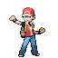

Skip to adventure
Kay
Maze
Explore
Collection
0
Field guide
TRAIL 01 · THE VIEW FROM UP HERE
Granite Highlands
Adventure

Explorer
Trail journal
0 / 2
○
Reach the waiting Pokémon
○
Find all 3 trail stars
No rush. There’s no time limit.
A little breather.
Your adventure will be right here.
Back to the trail
✦
0
/ 3
trail stars
00:00
A little nudge
H
Click or tap a path to walk · an obstacle to clear it
WASD
/
↑ ↓ ← →
Move
SPACE
Attack
Collection saves automatically